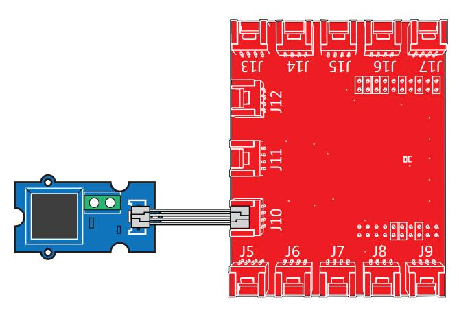
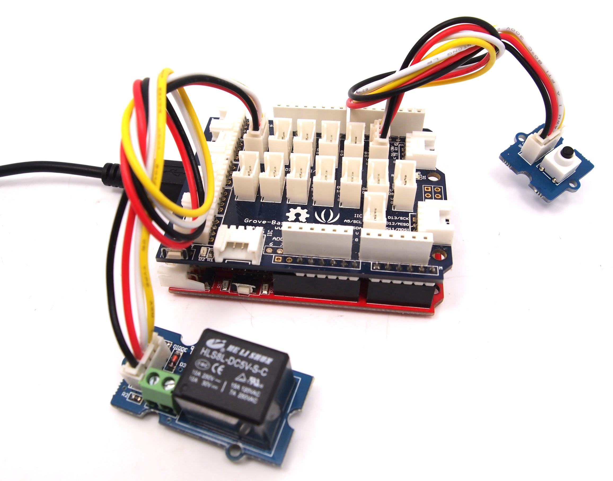

The Grove-Relay module is a digital normally-open switch. Through it, you can control circuit of high voltage with low voltage, say 5V on the controller. There is an indicator LED on the board, which will light up when the controlled terminals get closed.
| Parameter | v1.1 | v1.2 |
|---|---|---|
| Product Release Date | 27th Jan 2013 | 9th June 2014 |
| Operating Voltage | 5V | 3.3V~5V |
| Operating Current | 60mA | 100mA |
| Relay Life | 100,000 Cycle | 100,000 Cycle |
| Max Switching Voltage | 250VAC/30VDC | 250VAC/30VDC |
| Max Switching Current | 5A | 5A |
Controlling other electronics (Relay)

/*
Relay
The basic Energia example.
This example code is in the public domain.
*/
#define RELAY_PIN 39
// the setup routine runs once when you press reset:
void setup() {
pinMode(RELAY_PIN, OUTPUT); // initialize the digital pin as an output.
}
// the loop routine runs over and over again forever:
void loop() {
digitalWrite(RELAY_PIN, HIGH); // turn the relay on (HIGH is the voltage level)
delay(1000); // wait for a second
digitalWrite(RELAY_PIN, LOW); // turn the relay o by making the voltage LOW
delay(1000); // wait for a second
}

Below is a demo that shows you how to control a Grove - Relay with a Grove - Button. When the button gets pressed, the relay will close.
// Project Five - Relay Control
//
void setup()
{
pinMode(1, INPUT);
pinMode(2, INPUT);
pinMode(6, OUTPUT);
}
void loop()
{
if (digitalRead(1)==HIGH)
{
digitalWrite(6, HIGH);
delay(100);
}
if (digitalRead(2)==HIGH)
{
digitalWrite(6, LOW);
}
}
This sample is show you how to use Grove - Relay by Raspberry Pi . The demo below will show that the relay be control by Grove -Button.
# Raspberry Pi + Grove Switch + Grove Relay
import time
import grovepi
# Connect the Grove Switch to digital port D3
# SIG,NC,VCC,GND
switch = 3
# Connect the Grove Relay to digital port D4
# SIG,NC,VCC,GND
relay = 4
grovepi.pinMode(switch,"INPUT")
grovepi.pinMode(relay,"OUTPUT")
while True:
try:
if grovepi.digitalRead(switch):
grovepi.digitalWrite(relay,1)
else:
grovepi.digitalWrite(relay,0)
time.sleep(.05)
except KeyboardInterrupt:
grovepi.digitalWrite(relay,0)
break
except IOError:
print "Error"
cd GrovePi/Software/Python/
sudo python grove_switch_relay.py